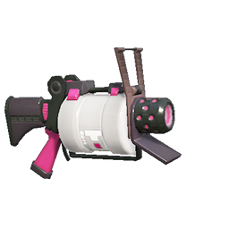
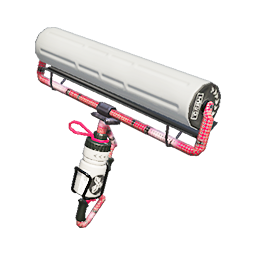
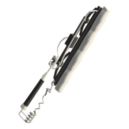

Rock, Paper & Scissors Splatfest
Rock, Paper & Scissors SplatfestThis webpage will explain the video game series Splatoon 3. Including, but not limited to game modes, weapons, story, shops, and special events.
Splatoon 3 is a third person shooter developed by Nintendo and is apart of the Splatoon series that debuted in 2015. The game features Squid and Octopi kid hybrids (inklings and octolings respectively), who are piloted by users all across the globe. Players compete in three minute 4v4 matches that take place in one of 14 battle arenas. Users can take part in two game modes: Turf War and Anarchy Battles.
Turf War is the first game mode presented to players upon entry into the game lobby. Players are split into two opposing teams each comprised of 4 different players. Throughout the 3-minute game, players must use their weapons to ink as much of the map as possible. Players can temporarily knockout an opposing team member by shooting them with enough ink, which will cause them to respawn at the edge of the map (at their home base). At the end of the round, the total amount of ink is measured from each team and the team with the most map coverage will win the match. Match wins result in gained XP which add to a players game level.
Anarchy, or Ranked Batlles are offered to players whose game level surpasses level 10. These battles are unique because they each have their own rules and are not won by map coverage (with the exception of splat zones). Winning an anarchy battle will result in a higher game level and in-game ranking. In-game rankings place you in your competitive class for anarchy battles. For example, a B ranked player will not play against an S rank player. Ranks range from C- to S+ (C, B, A, S respectively).
| Clam Blitz | Players collect clams from across the map and attempt to throw them into the opposite enemy's goal. Collecting 10 clams results in a clam ball spawning. When carried and thrown through the goal, the clam ball impact will open up the opposing team's goal post for your teammates to add clams (points). | |
| Splat Zones | One or Two sections of the map will be lit and marked for turf coverage. Teams will compete to hold the majority of ink in these zones until time runs out. This game mode is comparable to turf war, but instead of the whole map it is played in a section. | |
| Rainmaker | Use the Rainmaker device to break through the opposing team's checkpoint. A group wins when the Rainmaker is brought to the final checkpoint. | |
| Tower Control | Hop on the tower and defend against the opposing team to travel to the next checkpoint. The game is won when the final checkpoint is reached. |
"Repping the Splatlands, we are DEEP CUT!"
Deep Cut is an idol group comprised of Shiver, Frye, and Big Man. They anchor the news for inkopolis and perform for the splatfest events around inkopolis. They are revealed to be the antagonists of the Splatoon 3 story mode.
Splatfests are the only special event held in Splatoon 3 and they occur every 2 months or so. Splatfests are built around the public opinion, where Deep Cut announces the theme and their individual picks leaving players to join one of three teams. For instance, the first splatfest that launched was "What's better? Rock, Paper, or Scissors?" Players announced the team they wanted to join, and a turfwar extravaganza would commence the following weekend from Friday night to midday Sunday. Each player will be paired alongside teammates who chose the same category and will be placed into turf wars when entering the battle lobby (anarchy battles are disabled for the duration of the splatfest). Each team will receive their own unique ink color to color the map with. There is a unique gamemode that has been added with the third installation of the game, where players can participate in tricolor turf wars during Splatfests. In this game mode, all three teams will compete against one another instead of 1v1 pairings. At the end of the splatfest, nintendo will count the totals of won battles and the popular vote to determine the winning team. Winners will be compensated in sea urchins that can be exchanged for XP and exclusive perks.
Rock, Paper & Scissors Splatfest
Tricolor Turf War
Splatfest Results
Splatsville is where the resident inklings and octolings go when they aren't participating in battles. In Splatsville, players can access a variety of shops, story mode, table top turf war, and the entrance to the battle lobby.
Daytime Splatsville Views
During Splatfest special events, Splatsville will be decorated with all three competing team's colors. Additionally, Splatsville's theme of Japanese and Brazilian culture comes into play with lots of decor being inspired by Brazilian Carnival and Japanese festivals.
Splatfest decorations present in Splatsville for the event
This section will cover the types of weapons you can acquire from Sheldon at Ammo Knights
| Shooters |
|
 .52 gal |
|---|---|---|
| Blasters |
|
Range Blaster |
| Chargers |
|
E-liter 4k |
| Rollers |
|
Carbon Roller |
| Brushes |
|
Octobrush |
| Sloshers |
|
 Sloshing Machine Sloshing Machine |
| Splatlings |
|
 Heavy Splatling Heavy Splatling |
| Dualies |
|
Dark Tetra Dualies |
| Brellas |
|
 Undercover Brella Undercover Brella |
| Stringers |
|
Tri-Stringer |
| Splatanas |
|
 Splatana Wiper |
Email: splat3fanz@gmail.com
Phone: 704-860-2002